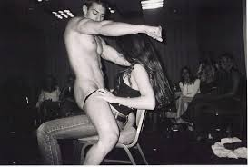
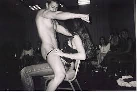

Bachelorettes Activities
Parties, Travel, Entertainers


 

Hire Male Strippers - Here To Please Your Party
The busy city of Toronto Ontario to the city of Atlanta, GA—famous for its coastal charm, historic towns, and vibrant nightlife—isn’t just a destination for southern hospitality and fresh seafood. It’s also a rising hotspot for unforgettable adult entertainment experiences, especially when it comes to hiring male strippers for special events. Whether you’re planning a wild bachelorette weekend in Toronto, a spicy girls’ night in Buffalo, or a surprise birthday celebration in Beaufort, hiring a professional entertainer can take your gathering from ordinary to unforgettable.
Booking a Male Stripper
While bachelorette parties top the list, male strippers in the Lowcountry are in high demand for a range of occasions:
- Birthday Parties: Whether you're turning 25 or 55, a surprise performer makes it a night to remember.
- Girls’ Weekend Getaways: Kick off your girls’ trip with a little cheeky fun.
- Divorce Parties:Celebrate your new chapter with empowering entertainment.
- Retirement Celebrations: Yes, even the most seasoned among us enjoy a little spice.
- Couples' Parties:Add a little flair to an adult-themed celebration.
Male Strippers
- Just Because:No matter the reason, the goal is the same: to create a memory that sticks.
- You Choose the Location:Whether you're staying in a vacation rental, a beach house, or a hotel downtown, most performers travel to you. This means you can plan your entertainment around your group’s schedule and preferences without worrying about transportation or venue restrictions.
- Performers Fit The Vibe:Many dancers offer themed costumes, from firefighters and military men to charming Southern gents. Want something cheeky? Sultry? Over-the-top funny? Just communicate your vision when booking.
- What to Expect When You Book:Booking a male stripper in the Lowcountry isn’t complicated, but knowing what to expect will ensure your party goes off without a hitch.
- A example of a good professional male stripper is Hardbodydancer in the Ontario area - Miguel Exotic Dancer.
You Can Set The Pace
- How Long:As long as is needed for the party.
- No Strip Club Needed:Because the private experiences than large strip clubs, booking directly means you get a more tailored, intimate, and memorable experience.
- Book Early, Escpecially On Weekends:Our major destinations for bachelorettes and beach groups. That means performers book up fast. Lock in your entertainment a few weeks in advance if possible.
- Communicate Clearly:Be upfront about the vibe you want. Do you want funny and playful or seriously seductive? The more info you provide, the better the experience.
- Respect Goes A Long Way:These entertainers are professionals. Treat them with respect, follow the agreed-upon rules, and you’ll get the best performance in return.
- Have The Payment Ready:Most dancers require a deposit upfront, with the remainder due at the time of performance. Make sure your group agrees on the split before the dancer arrives to avoid any awkward delays.
- Popular Spots For A Private Show:AirBnb, Rental House, Apartment, Dorm Room
- A Few More Things:Here are a few ideal settings for a male stripper performance in the Lowcountry:
- Folly Beach:Oceanfront homes and decks make for unforgettable outdoor (or indoor) shows.
Where The Fun Happens
- Toronto Canada AirBnb: A rental house to bring the fun to you.
- Downtown Columbus Ohio Rentals: A chic townhouse or apartment in the city can turn into your own private nightclub.
- Atlanta Ga Vacation Homes:Perfect for an upscale but cheeky girls’ weekend.
- Macon Ga: Big houses and quiet neighborhoods make it easy to have fun without outside noise complaints.
- Private Yachts or Boats: Yes, some groups even bring the show to the water!
A performer known for high-energy dance moves, creative costumes, and a stage presence that gets everyone smiling. Whether he’s showing up in a tux or a towel, he’s known to light up the room. He's a local favorite for birthday surprises and bachelorette blowouts.
Booking talent ensures you get a polished, experienced performer who knows how to work the crowd and keep the energy just right for your crew.
Things To Know
- Music: Have your playlist or speaker ready if the dancer isn’t bringing their own music.
- Cameras:Keep the camera phones off unless the dancer agrees to photos.
- Assignment: Assign someone to handle the door or direct the dancer quietly if it’s a surprise.
- Set Up:Set the room up with enough space to perform.
Hiring a male stripper in the Lowcountry isn’t just a cheeky activity—it’s an experience. Whether you’re sipping cocktails on the porch in Beaufort or living it up in a Atlanta penthouse, bringing in a professional dancer adds a thrilling twist that your guests won’t stop talking about.
When You Hire The Male Stripper Go Private
The Entertainment
Why a Private Party Male Stripper Is Better Than a Male Revue Show
When it comes to planning a girls’ night, bachelorette bash, or birthday surprise, many people debate between two options: going out to a male revue or hiring a private male stripper to come to them. While both can be fun, the private party experience wins hands down in terms of value, convenience, and personalization.
Let’s break down why going private is the smarter—and sexier—choice.
It's Way More Affordable
A night out at a male revue might sound exciting until you tally up the costs. Between tickets (often $30–$60 each), drinks, tips, rideshares, and parking, your group could spend hundreds before the show even begins. And unless you’re front row, you’re watching from a distance with dozens—or even hundreds—of other people.
In contrast, a private dancer typically charges one flat rate, often between $200–$300 for a full show. Split between a group of five or ten, that’s incredibly budget-friendly. You get an entire performance tailored to your group, without draining your wallet.
The Experience Is More Personal
Main Strip to walk
This is the main place to walk on your Toronto Bach trip. You will find the best clubs and some nice resturants on this road. One stop shop.
You Control the Setting
Private party performances are the exact opposite. The dancer is there for you and your crew. The attention is focused on your guest of honor. You can request themes, music, even specific dance styles—and the performer is there to make your group laugh, blush, and have a great time. It feels more intimate, more exciting, and way more memorable.
It’s More Fun for the Group
Just Do A Dance
Booking a private stripper means the party comes to you. Whether you’re hosting at an Airbnb, a beach house, a hotel suite, or your own living room, you don’t have to deal with noisy crowds, overpriced drinks, or strict venue rules.
Entertainer
Let’s be real: not everyone wants to go out to a crowded club. Some people are shy, others just want to stay in comfy clothes and sip wine with their girls. A private show brings the fun to your group without any of the hassle. You can laugh, take photos (if allowed), and fully enjoy the entertainment without worrying about being judged or competing with strangers for attention.
- Exotic Dancers
- Sexy City
- Party Dancers
- Have Fun
- Good prices
-
Come See
We love strippers
- Pleasers Online
- Learn more
- See the site
- The best prices
- Bachelorettes
-
We Want You
Book Now